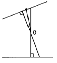
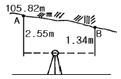
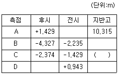

지적기사 (2004-08-08 기출문제)
1과목: 지적측량
1. 측량의 오차 중 최소 제곱법의 원리를 이용하여 처리할 수 있는 것은?
- 정오차
- 부정오차
- 착각
- 물리적 오차
(정답률: 알수없음)

2. 방위각 271° 30′ 의 방위는?
- N 89° 30′ E
- N 1° 30′ W
- N 88° 30′ W
- N 90° W
(정답률: 알수없음)
3. 지적삼각점 성과표에 기록, 관리하여야 하는 사항이 아닌것은?
- 자오선수차
- 좌표 및 표고
- 삼각점간 수평거리 대수
- 시준점의 명칭과 방위각과 거리
(정답률: 알수없음)
4. 2점간의 거리가 222m이고 2점간의 방위각이 33° 33′ 33″일 때 종선차는?
- 122.721m
- 212.547m
- 196.484m
- 184.996m
(정답률: 알수없음)
5. 지적도근측량을 배각법에 의하여 측량결과가 허용범위 이내인 때에 그 오차의 배부방법으로 옳은 것은?(단, K는 각측선의 배부량, e는 측각오차, n은 변의 수, R은 폐색변을 포함한 각 측선장의 반수의 총합계, r은 각측선의 반수임)
- K = -(e/R)x r초
- K = -(R/e)x r초
- K = -(n/e)x R초
- K = -(R/n)x e초
(정답률: 알수없음)
6. 지적삼각점의 관측을 위한 광파측거기의 정밀도는?
- 표준편차가 ± (5㎝ + 5ppm) 이상
- 표준편차가 ± (5㎜ + 5ppm) 이상
- 표준편차가 ± (5㎝ + 6ppm) 이상
- 표준편차가 ± (5㎜ + 6ppm) 이상
(정답률: 알수없음)
7. 축척 1/1200 지역에서 측판측량을 교회법에 의하여 실시하였다. 방향선의 지상(地上)길이는 몇 m 이내로 하여야 하는가?
- 96 m
- 100m
- 120m
- 150m
(정답률: 알수없음)
8. 축척 1/600을 축척 1/500으로 잘못 알고 면적을 계산한 결과가 2500m2 이었다. 축척 1/600 에서의 실제 토지 면적은?
- 2500m2
- 3000m2
- 3600m2
- 4000m2
(정답률: 알수없음)
9. 토지의 면적을 좌표면적계산법에 의하는 경우 산출면적에 대한 설명으로 옳은 것은?
- 1/10m2 까지 계산하여 1m2 단위로 정한다.
- 1/100m2 까지 계산하여 1/10m2 단위로 정한다.
- 1/100m2 까지 계산하여 1m2 단위로 정한다.
- 1/1000m2 까지 계산하여 1/10m2 단위로 정한다.
(정답률: 알수없음)
10. 측량성과와 검사성과의 연결교차의 허용범위에 대한 설명으로 옳지 않은 것은?
- 지적삼각점 : 0.20m 이내
- 지적삼각보조점 : 0.25m 이내
- 경계점좌표등록부시행지역의 지적도근점 : 0.35m이내
- 경계점좌표등록부시행지역 외의 지역에 대한 경계점: (3M/10)mm 이내 (M=축척분모)
(정답률: 알수없음)
11. 측판측량의 도선법에서 도상길이의 배분법은?
- 변의 길이에 반비례하여 분배한다.
- 변의 순서에 반비례하여 분배한다.
- 변의 길이에 비례하여 분배한다.
- 변의 순서에 비례하여 분배한다.
(정답률: 알수없음)
12. 경위의 측량방법에 의한 지적삼각측량의 실시기준으로 틀린 것은?
- 관측은 10초독 이상의 경위의를 사용한다.
- 수평각은 3대회의 방향관측법에 의한다.
- 1방향각의 측각공차는 30초 이내로 한다.
- 연직각 관측시 허용교차는 40초 이내로 한다.
(정답률: 알수없음)
13. 축척 1/1200 지역의 토지를 전자면적계로 2회 측정하여 각각 138232m2와 138347m2 의 값을 얻었을 경우 처리방법으로 맞는 것은?
- 작은 면적으로 사용한다.
- 큰 면적으로 사용한다.
- 평균하여 사용한다.
- 재측량하여야 한다.
(정답률: 알수없음)
14. 도면에 등록하는 경계, 행정구역선, 지적측량기준점의 제도시 폭에 대한 크기가 옳게 짝지어진 것은?
- 경계는 0.1mm, 행정구획선은 0.2mm
- 지적측량기준점은 0.2mm, 행정구역선은 0.1mm
- 지적측량기준점은 0.2mm, 행정구역선은 0.4mm
- 경계는 0.2mm, 지적측량기준점은 0.1mm
(정답률: 알수없음)
15. 측판을 세우는데 필요한 3가지 조건으로 맞는 것은?
- 중심, 구심, 표정
- 정위, 표정, 치심
- 표정, 정준, 이심
- 구심, 정준, 표정
(정답률: 알수없음)
16. 지적측량기준점을 도면상에 제도하는 경우 이에 대한 설명으로 적합한 것은?
- 2등삼각점은 3중원으로 제도하고, 그 중심원 내부를 검은색으로 채색한다.
- 지적도근점은 3㎜크기의 원으로 제도한다.
- 지적삼각보조점은 이중원으로 제도한다.
- 지적삼각점은 원안에 십자선을 표시한다.
(정답률: 알수없음)
17. 지적공부 작성 중 지적도면상에 행정구역선을 제도하는 경우 올바른 것은?
- 행정구역선이 겹치는 경우 같이 제도한다.
- 행정구역선은 경계와 겹치게 제도한다.
- 행정구역의 명칭은 4 내지 6㎜ 크기로 제도한다.
- 철도와 같은 고유명칭은 6㎜ 크기로 제도한다.
(정답률: 알수없음)
18. 측판측량방법에 의한 세부측량을 실시하는 경우로서 지적도를 비치하는 지역의 거리측정단위는?
- 1cm
- 5cm
- 10cm
- 20cm
(정답률: 알수없음)
19. 측판측량방법에 의한 세부측량의 방법에 해당되지 않는 것은?
- 현형법
- 도선법
- 교회법
- 방사법
(정답률: 알수없음)
20. 도면 재작성의 기준으로 옳지 않은 것은?
- 재작성 당시의 도면을 기준으로 한다.
- 직접자사법, 간접자사법 또는 전자자동제도법에 의한다.
- 도곽선의 신축량이 0.5mm 이상인 경우에는 전자자동제도법에 의하여 신축을 보정한다.
- 도면의 경계가 불분명한 경우에는 재측량을 실시한다.
(정답률: 알수없음)
2과목: 응용측량
21. 노선측량에서 두 점의 좌표가 점A (1⑤.25m, 25.99m), 점B (1⑤.25m, 40.55m)일 때 측선 AB의 방위각과 거리는 얼마인가?
- 90° , 14.56m
- 180° , 14.56m
- 270° , 211.99m
- 0° , 211.56m
(정답률: 알수없음)
22. 1/5000의 지형측량에서 위치의 허용오차를 도상 ± 0.5㎜실제 관측 높이의 허용오차를 ± 1.0m로 하는 경우 토지의 경사 25° 에서 등고선의 허용오차는?
- ± 2.51m
- ± 2.17m
- ± 2.04m
- ± 1.83m
(정답률: 알수없음)
23. 교각(I)는 60° , 곡선의 반지름(R)이 200m, 측점간 거리(ℓ)이 20m 일 때 시단현의 편각은? (단, 노선시점에서 교점까지의 추가거리는 630.29m임)
- 0° 24′ 31″
- 0° 34′ 31″
- 0° 44′ 31″
- 0° 54′ 31″
(정답률: 알수없음)
24. 균시차(equation of time)에 대한 설명으로 가장 옳은 것은?
- 균시차 = 시태양시 + 12h
- 균시차 = 시태양시 - 평균태양시
- 균시차 = 시태양시 + 9h
- 균시차 = 시태양시 - 12h
(정답률: 알수없음)
25. 다음 원격측정에 필요한 사항으로 옳지 않은 것은?
- 탐사된 자료가 즉시 이용될 수 있으며, 재해 및 환경문제 해결에 편리하다.
- 관측이 좁은 시야각으로 행하여지므로 얻어진 영상은 정사투영에 가깝다.
- 회전주기가 일정하므로 원하는 지점 및 시기에 관측하기가 쉽다.
- 짧은 시간내에 넓은 지역을 동시에 측정할수 있으며 반복측정이 가능하다.
(정답률: 알수없음)
26. 공중사진(수직사진)으로 판독할 수 없는 것은?
- 행정구역의 판독
- 삼림의 판독
- 군사적인 판독
- 토양의 판독
(정답률: 알수없음)
27. 노선측량에서 기지점부터 곡선시점(B.C)까지의 거리가 2410.5m이고 곡선의 길이(C.L)가 320.5m 이면 곡선종점(E.C)까지의 거리는?
- 1621m
- 1831m
- 2731m
- 2821m
(정답률: 알수없음)
28. GPS의 특징을 설명한 것 중 틀린 것은?
- 고정밀도의 측량이 가능하다.
- 측점간의 상호 시통이 필요하지 않다.
- 측점에서 모든 데이터 취득이 가능하다.
- 날씨에 영향을 많이 받으며 야간관측이 어렵다.
(정답률: 알수없음)
29. 1/50,000의 지형도상에서 A점과 B점 사이의 거리를 도상에서 측정한 결과 16㎜였다. A점의 표고가 230m, B점의 표고가 320m일 때 이 사면의 경사는 약 얼마인가?
- 1/9
- 1/10
- 1/11
- 1/12
(정답률: 알수없음)
30. 사진에 수직인 선과 중심점에서 연직인 선 사이의 각을 2등분하여 만나는 선이 사진상에는 일개의 점으로 나타난다. 이 점을 무엇이라고 부르는가?

- 연직점(nadir point)
- 주점(principal point)
- 등각점(iso-center)
- 소실점(vanishing point)
(정답률: 알수없음)
31. 다음 중 곡선설치법에서 원곡선이 아닌 것은?
- 복곡선
- 렘니스케이트
- 반향곡선
- 머리핀곡선
(정답률: 알수없음)
32. 측점이 갱도의 천정에 설치되어 있는 갱내의 수준측량을 실시하였다. 지반고가 1⑤.82m인 천정 기지점 A를 후시한 결과 2.55m 이고 구하고자 하는 B점의 전시가 1.34m일 때 B점의 지반고는 얼마인가?

- 101.93m
- 104.61m
- 107.03m
- 109.71m
(정답률: 알수없음)
33. 지표상에 설치한 중심선을 기준으로 터널을 굴착할 때 진행방향으로 갱내의 중심선을 결정하는 작업은?
- 답사
- 예측
- 지표설치
- 지하설치
(정답률: 알수없음)
34. 넓은 지역에 지성선을 따라 각 지점의 표고를 측정하여 이 점들을 기준으로 하여 등고선을 삽입하는 방법은?
- 횡단선법
- 방안점법
- 지형점법
- 종단점법
(정답률: 알수없음)
35. 삼각점 사이의 고저차를 측정할 때 생기는 구차(球差)는 다음 중 어느 때 가장 크게 발생하는가?
- 삼각점간 거리가 가까울 때
- 삼각점간 거리가 약 4㎞일 때
- 삼각점간 거리가 11㎞가 넘을 때
- 삼각점간 거리보다는 관측시간에 기인된다.
(정답률: 알수없음)
36. 지구를 완전구체로 볼 때 위도 0° 에서 경도 1"차에 대한 호장은? (단, 지구 반경은 6370㎞ 임)
- 0.3m
- 3.0m
- 30.0m
- 300.0m
(정답률: 알수없음)
37. 터널에서 수준측량을 실시한 야장이 다음과 같을 때 C점의 지반고는? (단, - 부호는 측점이 천정에 설치되어 있음)

- 5.182m
- 7.764m
- 8.707m
- 11.081m
(정답률: 알수없음)
38. GPS 위성의 공전주기는 약 얼마인가?
- 6시간
- 10시간
- 12시간
- 18시간
(정답률: 알수없음)
39. 하천의 유속을 측정하기 위해 수면으로부터 수심의 2/10, 6/10, 8/10 되는 곳의 유속을 측정하였더니 0.56m/sec, 0.50m/sec, 0.36m/sec 이었다면 평균 유속은?
- 0.46m/sec
- 0.47m/sec
- 0.48m/sec
- 0.53m/sec
(정답률: 알수없음)
40. 수준측량에서 전시와 후시의 거리를 같게 함으로서 소거 할 수 있는 오차는?
- 표척의 눈금 오차
- 레벨의 침하에 의한 오차
- 지구의 곡률 오차
- 레벨과 표척의 경사에 의한 오차
(정답률: 알수없음)
3과목: 토지정보체계론
41. 르 코르뷰제(Le Corbusier)의 빛나는 도시에 대한 설명으로 적합하지 않은 것은?
- 인구 500만 기준도시
- 직선사용
- 근린지구계획
- 도시계획에서 높은 인구밀도 강조
(정답률: 알수없음)
42. 집단생잔법(cohort survival method)으로 인구를 추계 할 때 고려하지 않아도 되는 것은?
- 생잔률
- 전입, 전출의 비율
- 출생률과 사망률
- 한계인구
(정답률: 알수없음)
43. 환지처분의 공고가 있은 날의 익일에 공공시설 용지를 무상으로 취득할 수 있는 자는?
- 공공용지 시설용지의 소유자
- 관할 시장,군수
- 그 시설을 관리할 행정청
- 건설부장관이 지정한 자
(정답률: 알수없음)
44. 도시생활환경지표 계산식이 잘못된 것은?
- 주택보급률 = (주택수/가구수) × 100
- 상수도보급률 = (상수도 수혜가구/총가구수) × 100
- 자동차보유율 = (자동차대수/인구수) × 100
- 교통인구율 = (승차총회수/인구수) × 100
(정답률: 알수없음)
45. 다음 중 도력(都力)에 해당하지 않는 것은?
- 생산력
- 소비력
- 부력(富力)
- 인구수
(정답률: 알수없음)
46. 지역지구제(地域地區制)를 결정할 때 기여도가 가장 낮은 것은?
- 공시지가도(公示地價圖)
- 시가화변천도(市街化變遷圖)
- 전력공급현황도(電力供給現況圖)
- 교통운수상황도(交通運輸狀況圖)
(정답률: 알수없음)
47. 변이 할당 분석법에 대한 설명 중 틀린 것은?
- 지역성장의 횡적· 종적인 차원을 동시에 관찰할 수있다.
- 2개 시점의 자료만으로도 동적인 분석이 가능하다.
- 산업 상호간의 연관성을 고려하고 있다.
- 이 분석법과 관련된 학자는 Beand Greenberg, Richardson, Hoover 등이 있다.
(정답률: 알수없음)
48. 도시의 기본적 구성 요소로 보기 어려운 것은?
- 시민
- 자연
- 토지
- 시설
(정답률: 알수없음)
49. 표본조사에서 표본추출의 경우 모집단과 표본과의 관계는?
- 양자를 정비례 관계로 표본 추출한다.
- 양자를 반비례 관계로 표본 추출한다.
- 양자에 일정한 관계 없이 표본 추출한다.
- 모집단중 대표 표본만을 추출한다.
(정답률: 알수없음)
50. 도시계획사업으로 거리가 먼 것은?
- 도시계획시설사업
- 아파트지구조성사업
- 도시개발사업
- 정비사업
(정답률: 알수없음)
51. 인구주택총조사는 몇 년마다 실시하는가?
- 1년
- 2년
- 5년
- 10년
(정답률: 알수없음)
52. 독시아디스(C. A. Doxiadis)가 인구규모기준으로 인간정 주사회를 15개 단계로 구분하였는데, 다음의 공간단위 중에서 인구가 가장 많은 것은?
- Conurbation
- Megalopolis
- Ecumenopolis
- Metropolis
(정답률: 알수없음)
53. 그리스 도시에서 종교와 방위기능을 가지는 도시의 상징적 구조물은 무엇인가?
- 아크로폴리스(Acropolis)
- 아고라(Agora)
- 포럼(Forum)
- 바실리카(Vasilicas)
(정답률: 알수없음)
54. 광역도시(廣域都市)는 일반적으로 어느 형태를 갖게 되는가?
- 성운상(星雲狀)
- 방형상(方形狀)
- 대상(帶狀)
- 선형상(線形狀)
(정답률: 알수없음)
55. 건폐율이 80%, 용적률이 720%일 때 평균층수는 얼마인가?
- 15층
- 10층
- 6층
- 9층
(정답률: 알수없음)
56. 공동구(共同溝)의 장단점에 관한 아래 기술중 타당하지 않는 것은?
- 최초의 건설비는 적으나 유지관리비가 비싸다.
- 도로면의 유지비를 절약할 수 있다.
- 가로와 도시 미관을 증진시킨다.
- 빈번한 노면의 굴토로 인한 교통 장애를 제거할 수있다.
(정답률: 알수없음)
57. 도시기본계획의 설명 중 틀린 것은?
- 장기 도시개발의 방향을 제시한다.
- 하위도시계획 입안의 지침을 제시한다.
- 법적 구속력이 있다.
- 일반인에게도 쉽게 이해될 수 있어야 한다.
(정답률: 알수없음)
58. 어느 도시에서 과거 10년간 인구증가수가 매년 일정하였다. 이 도시의 인구변동을 설명한 것 중 옳은 것은?
- 인구증가율이 차차 낮아지고 있다.
- 인구증가율이 차차 높아지고 있다.
- 인구증가율은 일정하였다.
- 이 도시는 새로 형성된 공업도시이다.
(정답률: 알수없음)
59. 다음중 도시관리계획의 내용에 포함되지 않는 것은?
- 도시개발사업계획
- 용도지역의 지정 및 변경
- 기반시설의 설치에 관한 계획
- 건축물의 형태 및 색채의 지정 및 변경
(정답률: 알수없음)
60. 다음중 신도시계획의 기본방향이 아닌 것은?
- 도시 인구구성의 다양화
- 시가화 지역과 농촌지역간의 통합
- 자동차와 보행자를 분리하는 도로망체계
- 도시성의 향상
(정답률: 알수없음)
4과목: 지적학
61. 농촌지역에서 500m2 이상의 넓은 대지 내에 지목현황이 정원, 우물, 양계장, 양돈장, 마당, 대지 등이 복합되었을 때 다음의 어떤 원칙으로 지목을 정하는가?
- 1필 1목의 원칙
- 주지목 추종의 원칙
- 복합설정의 원칙
- 면적비율의 원칙
(정답률: 알수없음)
62. ″지적공부에 등록된 토지표시 사항은 항상 실지와 일치하게 유지해야 한다″ 는 지적제도의 이상을 실현하는데 가장 합당한 것은?
- 형식적 심사주의
- 일물일권주의
- 실질적 심사주의
- 토지표시공개주의
(정답률: 알수없음)
63. 지적법이 제정되기 이전까지 지적법령의 변천 연혁을 바르게 나열한 것은?
- 토지조사법→ 토지조사령→ 지세령→ 조선지세령→ 조선임야조사령→ 지적법
- 토지조사법→ 지세령→ 토지조사령→ 조선지세령→ 조선임야조사령→ 지적법
- 토지조사법→ 토지조사령→ 지세령→ 조선임야조사령→조선지세령→ 지적법
- 토지조사법→ 지세령→ 조선임야조사령→ 토지조사령→조선지세령→ 지적법
(정답률: 알수없음)
64. 다음 경계의 유형 중 우리나라에서 적용되는 개념은?
- 자연경계(natural boundary)
- 일반경계(general boundary)
- 확정경계(fixed boundary)
- 승인경계(guaranted boundary)
(정답률: 알수없음)
65. 지적의 발생설 중 영토의 보존과 통치수단이라는 관점에서 본 이론으로 타당한 것은?
- 지배설
- 치수설
- 침략설
- 과세설
(정답률: 알수없음)
66. 토지조사부(土地調査簿)에 대한 설명으로 맞는 것은?
- 입안과 양안을 통합한 장부이다.
- 토지소유권의 사정원부로 사용된 장부이다.
- 별책토지대장으로 사용된 장부이다.
- 결수연명부로 사용된 장부이다.
(정답률: 알수없음)
67. 경국대전에 규정한 사항으로서 토지를 매 20년마다 다시 재어(改量) 작성 비치한 장부(帳簿)는?
- 입안(立案)
- 문권(文卷)
- 양안(量案)
- 지권(地卷)
(정답률: 알수없음)
68. 토지조사사업시 조사내용이 아닌 것은?
- 지가의 조사
- 토지소유권의 조사
- 지압조사
- 지형· 지모의 조사
(정답률: 알수없음)
69. 토지 소유권 보장에 가장 알맞은 지적제도는?
- 경제지적
- 법지적
- 세지적
- 도해지적
(정답률: 알수없음)
70. 토지조사사업시에 소유자에 관하여는 사정(査定)을 하였다. 이 사정(査定)의 뜻으로 볼수 있는 것은?
- 원래의 소유권을 재확인
- 원래의 소유권을 공증
- 원래의 소유권과 무주토지 소유권을 확정
- 원래의 소유권은 소멸하고 새로이 소유권 취득
(정답률: 알수없음)
71. 우리나라에서 법률상 토지와 건물의 개념 중 맞는 것은?
- 토지는 건물에 종속되어 등록된다.
- 건물은 토지에 종속되어 등록된다.
- 토지와 건물은 별개의 등록단위이다.
- 건물 등록제도는 시행되지 않고 있다.
(정답률: 알수없음)
72. 토지표시 사항중 지번(地番)의 역할과 가장 거리가 먼것은?
- 토지 위치 추측
- 물권 객체의 구분
- 등록 공시 단위의 표상
- 토지 규모 추측
(정답률: 알수없음)
73. 지적형식주의를 채택하고 있는 지적제도에 있어서 토지 표시사항의 등록에 대한 효력적 근거가 되는 것은?
- 지적공부
- 등기부
- 토지이동결의서
- 측량성과도
(정답률: 알수없음)
74. 지적법상 지적공부에 해당되지 않는 것은?
- 토지대장
- 임야도
- 경계점좌표등록부
- 지적측량원도
(정답률: 알수없음)
75. 지적학의 범위로서 거리가 먼 것은?
- 토지조사
- 토지등록
- 토지공시
- 토지경영
(정답률: 알수없음)
76. 개인 소유지가 하천으로 된 경우의 토지 소유권의 설명으로 옳은 것은?
- 무조건 국유로 한다.
- 기부를 받아 국유로 한다.
- 개인 소유로 두지말고 절차를 밟아서 국유로 한다.
- 개인 소유로 지속한다.
(정답률: 알수없음)
77. 우리나라의 지적 창설 당시 도로, 하천, 구거 및 소도서는 토지(임야)대장 등록에서 제외하였는데 가장 주요한 이유는?
- 측량하기 어려워서
- 소유자를 알 수가 없어서
- 경계선이 명확하지 않아서
- 과세적 가치가 없어서
(정답률: 알수없음)
78. 지적측량의 방법과 절차에 대하여 엄격한 법률적 규제를 하는 이유로 가장 옳은 것은?
- 정확한 소유권 확인유지
- 토지등록당시 정보유지
- 측량기술의 발전도모
- 지적법령의 법률 효력유지
(정답률: 알수없음)
79. 부동산 등기의 물적편성주의를 채용함에 있어서 전제 요건이 되는 것은?
- 공증제도의 완비
- 권원 보험제도의 완비
- 주민등록제도의 완비
- 지적제도의 완비
(정답률: 알수없음)
80. 경계불가분의 원칙이란?
- 토지조사 당시의 경계선은 말소가 불가능하다.
- 먼저 착묵한 선을 그 경계선으로 한다.
- 경계선은 면적이 큰 것을 위주로 한다.
- 인접지와의 경계선은 공통이다.
(정답률: 알수없음)
5과목: 지적관계법규
81. 다음 중 토지의 이동사항으로 볼 수 없는 것은?
- 지적공부에 등록된 토지소재가 변경되는 때
- 지적공부에 등록된 소유자가 변경되는 때
- 토지의 합병
- 지적공부에 등록된 좌표가 변경되는 때
(정답률: 알수없음)
82. 지적공부중 토지 및 임야대장에 등록되는 사항으로 틀린것은?
- 토지의 소재
- 소유자의 성명 또는 명칭, 주소 및 주민등록번호
- 도곽선과 그 수치
- 지번과 지목
(정답률: 알수없음)
83. 중앙지적위원회의 위원장 및 부위원장을 제외한 위원의 임기는?
- 1년
- 2년
- 3년
- 4년
(정답률: 알수없음)
84. 다음 중 지적공부의 복구 사유에 해당되는 것은?
- 축척변경을 한 때
- 지목변경을 한 때
- 도시계획사업을 완료 한 때
- 지적공부가 멸실· 훼손된 때
(정답률: 알수없음)
85. 국토의계획및이용에관한법률상 도로에 해당되지 않는 것은?
- 일반도로
- 자전거 전용도로
- 지하도로
- 지방도
(정답률: 알수없음)
86. 등기부(登記簿)의 갑구(甲區)에 기재해야 할 사항은 다음중 어느것인가?
- 부동산의 소재지
- 소유권에 관한 사항
- 소유권 이외의 권리에 관한 사항
- 토지의 지목, 지번, 면적에 관한 사항
(정답률: 알수없음)
87. 도시개발사업의 사업시행자는 그사업의 착수· 변경 또는 완료사실을 소관청에 신고하여야 하는데 이때의 신고 기간으로 맞는 것은?
- 신고사유가 발생한 날로부터 15일 이내
- 신고사유가 발생한 날로부터 21일 이내
- 신고사유가 발생한 날로부터 30일 이내
- 신고사유가 발생한 날로부터 60일 이내
(정답률: 알수없음)
88. 토지소유권에 대한 설명중 틀린 것은?
- 소유자는 대상 소유물을 사용·수익·처분할 수 있다.
- 토지소유권의 범위는 정당한 이익이 있는 범위내에서 토지의 상·하에 미친다.
- 토지의 점유권자라도 소유자가 요구하면 반환해야 한다.
- 인접하여 토지를 소유한 자는 공동비용으로 담을 설치할 수 있다.
(정답률: 알수없음)
89. 토지의 신규등록시 필요한 서류 중 옳지 않은 것은?
- 법원의 확정판결서 정본
- 등기부등본
- 소유권을 증명할 수 있는 서류의 사본
- 준공인가필증 사본
(정답률: 알수없음)
90. 소관청이 사유지내에 지적측량기준점표지를 설치한 경우 그 손실보상에 대한 재결기관은?
- 시· 도지사
- 행정자치부 장관
- 중앙지적위원회
- 관할토지수용위원회
(정답률: 알수없음)
91. 지번부여지역의 일부가 행정구역의 변경으로 다른 지번부여지역에 속하게 될 때 지번정리 방법은?
- 소관청이 새로이 그 지번을 부여하여야 한다.
- 종전 지번에 부호를 붙여 정한다.
- 토지소재만 변경 정리한다.
- 변경된 지번설정지역의 최종본번에 부번을 붙여 정리한다.
(정답률: 알수없음)
92. 지적법상 토지의 표시사항에 해당되지 않는 것은?
- 소유자의 주소
- 지번
- 경계
- 면적
(정답률: 알수없음)
93. 다음 중 지적법에서 규정하고 있지 않는 사항은?
- 토지등록 절차
- 지적측량 방법
- 지적공부정리 방법
- 토지소유권이전 절차
(정답률: 알수없음)
94. 축척변경을 한 결과 감소된 면적에 대하여 교부해야 할 청산금 총액이 부족할 경우 그 부족액을 부담해야 할 자는?
- 당해 지방자치단체
- 도지사
- 증가된 면적의 토지소유자
- 행정자치부장관
(정답률: 알수없음)
95. 다음 중 소관청이 관할 등기관서에 등기촉탁을 하는 사유에 해당되지 않는 것은?
- 등록사항의 직권정정
- 축척변경
- 행정구역변경으로 인한 지번변경
- 신규등록
(정답률: 알수없음)
96. 환지방식에 의한 도시개발사업시의 환지계획에서 정하여야 할 사항이 아닌 것은?
- 환지설계
- 필지별로 된 환지명세
- 필지별과 권리별로 된 청산대상토지 명세
- 환지의 청산금
(정답률: 알수없음)
97. 시행자가 과소토지가 되지 않도록 하기 위해 토지소유자의 동의를 얻어 환지의 목적인 토지에 갈음하여 건축물의 일부와 당해 건축물이 있는 토지의 공유지분을 부여하는 환지방식을 무엇이라 하는가?
- 입체환지
- 제자리환지
- 비환지
- 공유환지
(정답률: 알수없음)
98. 다음 중 건폐율을 정하는 목적이 아닌 것은?
- 공지확보와 최소한의 일조권 확보
- 도시공간의 합리적 이용
- 화재나 재해시 피난의 용이
- 채광, 통풍 등 위생의 양호
(정답률: 알수없음)
99. 국토의계획및이용에관한법률상 토지거래계약 허가구역 지정에 관한 설명으로 옳은 것은?
- 도지사는 건설교통부장관의 승인을 받아 허가구역을 지정할 수 있다.
- 허가구역의 지정은 10년간 유효하다.
- 허가구역의 지정은 공고일로부터 효력을 발생한다.
- 중앙도시계획위원회의 심의를 거쳐야 한다.
(정답률: 알수없음)
100. 지적공부에 등록된 토지소유자의 변경사항을 정리하고자 할 경우 다음중 무엇에 의하는가?
- 등기필증
- 지적공부등본
- 법원의 확정판결서
- 지적공부정리결의서
(정답률: 알수없음)